1-6막 · 복수의 여신들
한국어 번역은 독일어 원문에 대응하는 자동 번역 초안입니다.
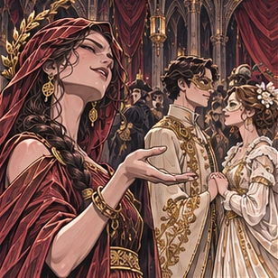
??? ?? ? ??? ??
MEGÄRA:
Das ist nur Spaß! denn, sind sie erst verbunden,
Ich nehm' es auf und weiß; in allen Fällen,
Das schönste Glück durch Grille zu vergällen;
Der Mensch ist ungleich, ungleich sind die Stunden.메가라: 이건 정말 재미있어요! 일단 연결되면 나는 그것을 받아들이고 알고 있습니다. 모든 경우에, 귀뚜라미로 가장 아름다운 행복을 망치다; 사람은 불평등하고 시간도 불평등합니다.
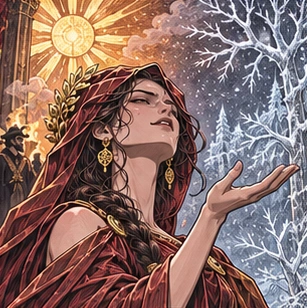
??? ?? ? ??? ??
Und niemand hat Erwünschtes fest in Armen,
Der sich nicht nach Erwünschterem törig sehnte,
Vom höchsten Glück, woran er sich gewöhnte;
Die Sonne flieht er, will den Frost erwarmen.그리고 누구도 자신이 원하는 것을 품에 안고 있지 않습니다. 더 바람직한 것을 어리석게도 갈망하지 않은 사람, 그가 익숙해진 최고의 행복에 대해; 그는 태양을 피해 서리를 따뜻하게 하고 싶어합니다.
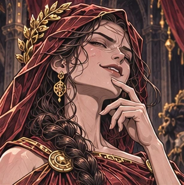
??? ?? ? ??? ??
Mit diesem allen weiß ich zu gebaren
Und führe her Asmodi, den Getreuen,
Zu rechter Zeit Unseliges auszustreuen,
Verderbe so das Menschenvolk in Paaren.이것으로 나는 출산하는 방법을 안다. 그리고 충실한 자 Asmodi를 여기로 데려 오십시오. 때를 따라 악한 일을 흩어지게 하려 하심이니라 따라서 사람들을 쌍으로 파괴하십시오.
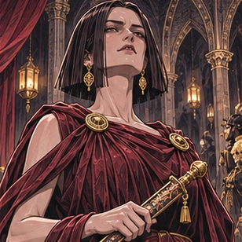
??? ?? ? ??? ??
TISIPHONE:
Gift und Dolch statt böser Zungen
Misch' ich, schärf' ich dem Verräter;
Liebst du andre, früher, später
Hat Verderben dich durchdrungen.티시폰: 사악한 혀 대신 독과 단검 나는 섞고, 배신자를 날카롭게 만듭니다. 다른 사람을 사랑합니까, 조만간 부패가 당신에게 침투했습니까?
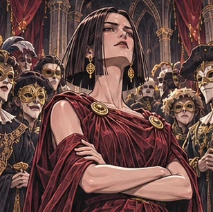
??? ?? ? ??? ??
Muß der Augenblicke Süßtes
Sich zu Gischt und Galle wandeln!
Hier kein Markten, hier kein Handeln--
Wie er es beging', er büßt es.가장 달콤한 순간이겠지 스프레이와 담즙으로 변합니다! 여기에는 마케팅도 없고 거래도 없습니다. 그가 저지른 일에 대해 그는 속죄합니다.
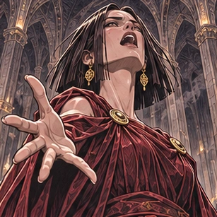
??? ?? ? ??? ??
Singe keiner vom Vergeben!
Felsen klag' ich meine Sache,
Echo! horch! erwidert: Rache!
Und wer wechselt, soll nicht leben.누구도 용서에 대해 노래하지 못하게 하세요! 나는 내 원인을 바위들에게 불평하고, 에코! 듣다! 대답 : 복수! 그리고 변하는 사람은 살면 안됩니다.
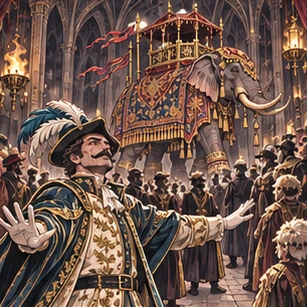
??? ?? ? ??? ??
HEROLD:
Belieb' es euch, zur Seite wegzuweichen,
Denn was jetzt kommt, ist nicht von euresgleichen.
Ihr seht, wie sich ein Berg herangedrängt,
Mit bunten Teppichen die Weichen stolz behängt,헤럴드: 옆으로 이동하기로 선택한 경우, 지금 오는 것은 당신과 같지 않기 때문입니다. 산이 앞으로 나아가는 모습을 보세요. 스위치에는 알록달록한 카펫이 자랑스럽게 걸려 있고,
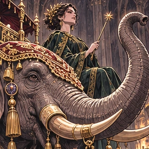
??? ?? ? ??? ??
Ein Haupt mit langen Zähnen, Schlangenrüssel,
Geheimnisvoll, doch zeig' ich euch den Schlüssel.
Im Nacken sitzt ihm zierlich-zarte Frau,
Mit feinem Stäbchen lenkt sie ihn genau;긴 이빨을 가진 머리, 뱀의 몸통, 신비롭지만 열쇠를 보여드리겠습니다. 섬세하고 섬세한 여성이 그의 목에 앉아 있고, 그녀는 가는 막대기로 그를 정확하게 인도합니다.
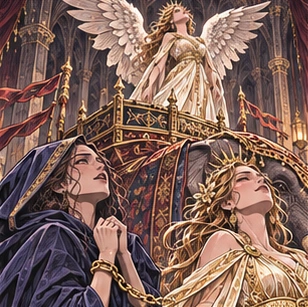
??? ?? ? ??? ??
Die andre, droben stehend herrlich-hehr,
Umgibt ein Glanz, der blendet mich zu sehr.
Zur Seite gehn gekettet edle Frauen,
Die eine bang, die andre froh zu schauen;다른 한 사람은 영광스럽고 고상하게 위에 서 있고, 내 주위에는 나를 너무 눈멀게 하는 빛이 있습니다. 사슬에 묶인 귀족 여성들은 옆으로 물러나고, 한 사람은 두려워하고, 다른 사람은 보고 기뻐합니다.
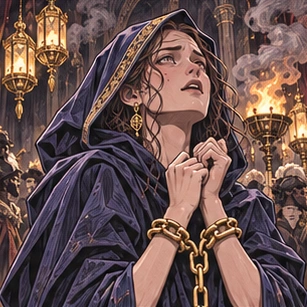
??? ?? ? ??? ??
Die eine wünscht, die andre fühlt sich frei.
Verkünde jede, wer sie sei.
FURCHT:
Dunstige Fackeln, Lampen, Lichter
Dämmern durchs verworrne Fest;한 사람은 원하고 다른 사람은 자유를 느낍니다. 그녀가 누구인지 각자 발표하십시오. 두려움: 흐릿한 횃불, 램프, 조명 혼란스러운 축제 속 황혼
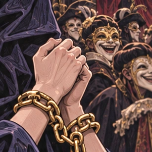
??? ?? ? ??? ??
Zwischen diese Truggesichter
Bannt mich, ach! die Kette fest.
Fort, ihr lächerlichen Lacher!
Euer Grinsen gibt Verdacht;이 환상의 얼굴들 사이에서 나를 추방해라, 오! 체인이 꽉. 어서, 이 어리석은 웃음꾼들아! 당신의 미소는 의심을 불러일으킵니다.
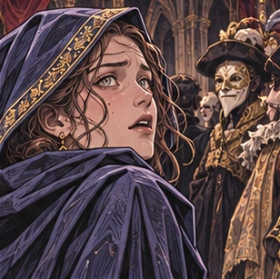
??? ?? ? ??? ??
Alle meine Widersacher
Drängen mich in dieser Nacht.
Hier! ein Freund ist Feind geworden,
Seine Maske kenn' ich schon;내 상대는 모두 그날 밤에 나에게 촉구하십시오. 여기! 친구가 적이 되었고, 나는 이미 그의 가면을 알고 있다.
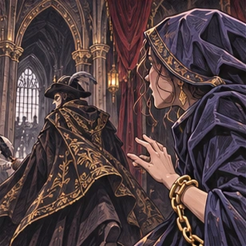
??? ?? ? ??? ??
Jener wollte mich ermorden,
Nun entdeckt schleicht er davon.
Ach wie gern in jeder Richtung
Flöh' ich zu der Welt hinaus;그 사람은 나를 죽이려고 했어 이제 발견된 그는 몰래 빠져 나갑니다. 아, 모든 방향에서 얼마나 행복한지 나는 세상으로 도망칩니다.
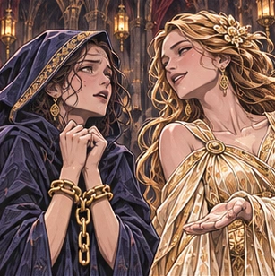
??? ?? ? ??? ??
Doch von drüben droht Vernichtung,
Hält mich zwischen Dunst und Graus.
HOFFNUNG:
Seid gegrüßt, ihr lieben Schwestern!
Habt ihr euch schon heut' und gestern하지만 저쪽에서는 파괴의 위협이 다가오고, 안개와 공포 사이에 나를 유지합니다. 희망: 안녕하세요, 사랑하는 자매 여러분! 오늘도 어제도 만났나요?
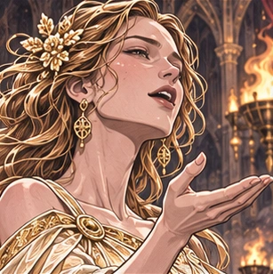
??? ?? ? ??? ??
In Vermummungen gefallen,
Weiß ich doch gewiß von allen:
Morgen wollt ihr euch enthüllen.
Und wenn wir bei Fackelscheine변장을 하고, 나는 그들 모두에 대해 확실히 알고 있습니다. 내일 당신은 자신을 공개하고 싶습니다. 그리고 우리가 횃불을 볼 때
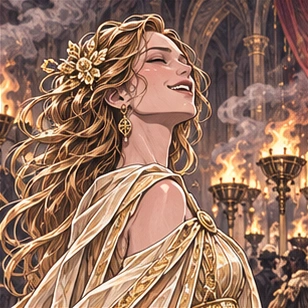
??? ?? ? ??? ??
Uns nicht sonderlich behagen,
Werden wir in heitern Tagen
Ganz nach unserm eignen Willen
Bald gesellig, bald alleine우리는 별로 편하지 않아요 우리는 더 밝은 날에 온전히 우리 뜻대로 이제는 사교적으로, 이제는 혼자
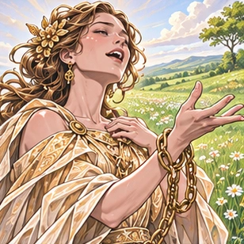
??? ?? ? ??? ??
Frei durch schöne Fluren wandeln,
Nach Belieben ruhn und handeln
Und in sorgenfreiem Leben
Nie entbehren, stets erstreben;아름다운 복도를 자유롭게 거닐어 보세요. 휴식을 취하고 마음대로 행동하십시오. 그리고 평온한 삶에서 결코 박탈하지 말고 항상 노력하십시오.
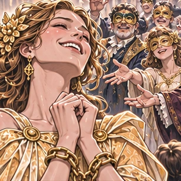
??? ?? ? ??? ??
überall willkommne Gäste,
Treten wir getrost hinein:
Sicherlich, es muß das Beste
Irgendwo zu finden sein.어디서나 손님을 환영합니다. 자신있게 들어갑시다. 당연히 최고겠지 어딘가에서 찾을 수 있습니다.
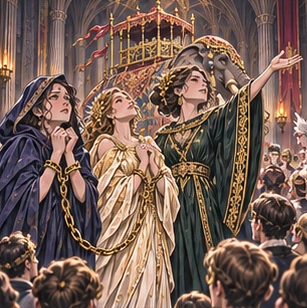
??? ?? ? ??? ??
KLUGHEIT:
Zwei der größten Menschenfeinde,
Furcht und Hoffnung, angekettet,
Halt' ich ab von der Gemeinde;
Platz gemacht! ihr seid gerettet.지혜: 가장 위대한 염세주의자 두 명, 두려움과 희망이 사슬에 묶여 있고, 나는 커뮤니티에서 멀리 떨어져 있습니다. 길을 냈습니다! 당신은 구원 받았습니다.
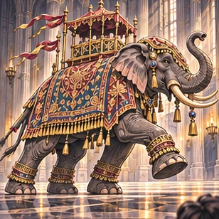
??? ?? ? ??? ??
Den lebendigen Kolossen
Führ' ich, seht ihr, turmbeladen,
Und er wandelt unverdrossen
Schritt vor Schritt auf steilen Pfaden.살아있는 거상 나는 탑을 잔뜩 쌓아놓고 이끈다. 그리고 그는 의연하게 걸어간다. 가파른 길을 한걸음 한걸음.
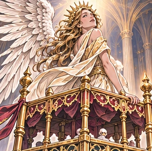
??? ?? ? ??? ??
Droben aber auf der Zinne
Jene Göttin, mit behenden
Breiten Flügeln, zum Gewinne
Allerseits sich hinzuwenden.하지만 흉벽 위에서는 그 여신, 민첩하게 넓은 날개, 승리를 위해 모두가 그것에 의지해야 합니다.
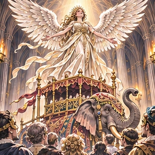
??? ?? ? ??? ??
Rings umgibt sie Glanz und Glorie,
Leuchtend fern nach allen Seiten;
Und sie nennet sich Viktorie,
Göttin aller Tätigkeiten.그 주위에는 영광과 영광이 가득하도다 저 멀리 사방에서 빛나네 그리고 그녀는 자신을 빅토리라고 부릅니다. 모든 활동의 여신.
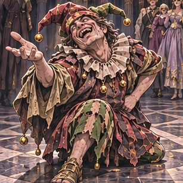
??? ?? ? ??? ??
ZOILO-THERSITES:
Hu! Hu! da komm' ich eben recht,
Ich schelt' euch allzusammen schlecht!
Doch was ich mir zum Ziel ersah,
Ist oben Frau Viktoria.ZOILO 테르사이트: 허! 뭐! 내가 오는 곳이 바로 거기야. 나는 너희 모두를 심하게 꾸짖는다! 하지만 내가 목표로 본 것은 Viktoria 씨는 위층에 있습니다.
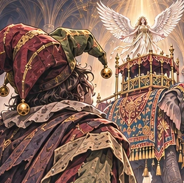
??? ?? ? ??? ??
Mit ihrem weißen Flügelpaar
Sie dünkt sich wohl, sie sei ein Aar,
Und wo sie sich nur hingewandt,
Gehör' ihr alles Volk und Land;그녀의 하얀 날개 한 쌍으로 그녀는 아마도 자신이 aar라고 생각할 것입니다. 그리고 그녀가 어디를 가든지, 모든 사람과 땅은 그녀의 것입니다.
??? ?? ? ??? ??
Doch, wo was Rühmliches gelingt,
Es mich sogleich in Harnisch bringt.
Das Tiefe hoch, das Hohe tief,
Das Schiefe grad, das Grade schief,그러나 칭찬할 만한 일이 성공하는 곳에서는 그것은 즉시 나를 갑옷에 넣습니다. 낮은 것은 높고, 높은 것은 낮다. 굽은 것은 곧은 것, 곧은 것은 굽은 것,
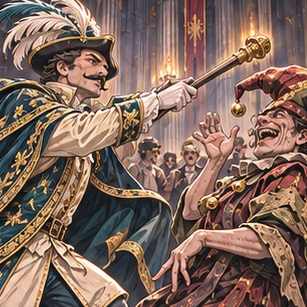
??? ?? ? ??? ??
Das ganz allein macht mich gesund,
So will ich's auf dem Erdenrund.
HEROLD:
So treffe dich, du Lumpenhund,
Des frommen Stabes Meisterstreich!그것만으로도 건강해진다. 그것이 내가 지구상에서 원하는 방식입니다. 헤럴드: 그럼 만나자, 너 라가머핀 경건한 지팡이의 대가!
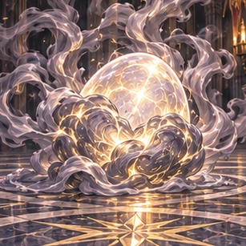
??? ?? ? ??? ??
Da krümm und winde dich sogleich!--
Wie sich die Doppelzwerggestalt
So schnell zum eklen Klumpen ballt!--
--Doch Wunder!--Klumpen wird zum Ei,그러면 바로 구부리고 몸부림쳐보세요!-- 이중왜성 그림은 어떻게 나타나는가 너무 빨리 공이 역겨운 덩어리로 변해버렸어요!-- --하지만 기적!--덩어리가 달걀로 변하고,
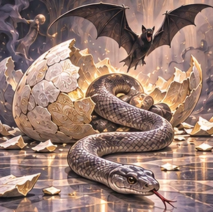
??? ?? ? ??? ??
Das bläht sich auf und platzt entzwei.
Nun fällt ein Zwillingspaar heraus,
Die Otter und die Fledermaus;
Die eine fort im Staube kriecht,그것은 두 개로 팽창하고 터집니다. 이제 쌍둥이 한 쌍이 떨어져 나가고, 수달과 박쥐; 그 사람은 먼지 속에서 기어 다니고,
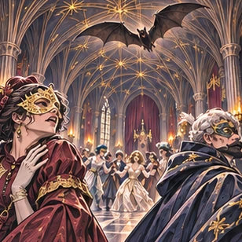
??? ?? ? ??? ??
Die andre schwarz zur Decke fliegt.
Sie eilen draußen zum Verein;
Da möcht' ich nicht der dritte sein.
GEMURMEL:
Frisch! dahinten tanzt man schon--다른 하나는 검은색으로 천장으로 날아갑니다. 그들은 클럽 밖으로 달려 나갑니다. 나는 세 번째가 되고 싶지 않아요. 중얼거림: 신선해요! 당신은 이미 저 뒤에서 춤을 추고 있어요--
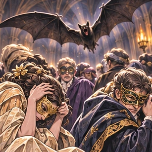
??? ?? ? ??? ??
Nein! Ich wollt', ich wär' davon--
Fühlst du, wie uns das umflicht,
Das gespenstische Gezücht?--
Saust es mir doch übers Haar--안돼! 좀 떨어져 있었으면 좋겠는데- 이것이 우리를 어떻게 둘러싸고 있는지 느끼십니까? 유령 품종?-- 내 머리카락 사이로 날아가게 해주세요--
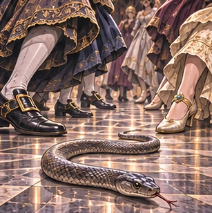
??? ?? ? ??? ??
Ward ich's doch am Fuß gewahr--
Keiner ist von uns verletzt--
Alle doch in Furcht gesetzt--
Ganz verdorben ist der Spaß--발에 닿은 걸 보니-- 우리 중 누구도 다치지 않았습니다. 모두들 두려움에 떨었습니다-- 재미가 완전히 망가졌습니다.
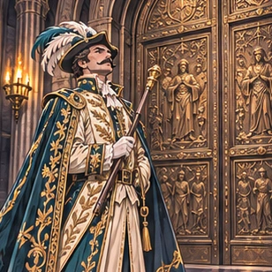
??? ?? ? ??? ??
Und die Bestien wollten das.
HEROLD:
Seit mir sind bei Maskeraden
Heroldspflichten aufgeladen,
Wach' ich ernstlich an der Pforte,그리고 짐승들은 그것을 원했습니다. 헤럴드: 가면무도회에 참석한 이후로 헤럴드 업무가 부과됨, 문 앞에서 진지하게 깨어나
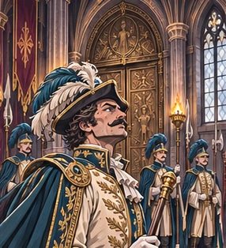
??? ?? ? ??? ??
Daß euch hier am lustigen Orte
Nichts Verderbliches erschleiche,
Weder wanke, weder weiche.
Doch ich fürchte, durch die Fenster당신이 여기 재미있는 곳에 있다는 걸 아무 것도 멸망하지 않게 하시고 흔들리지도 부드러워지지도 않습니다. 하지만 창문밖은 무서워
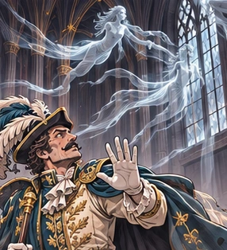
??? ?? ? ??? ??
Ziehen luftige Gespenster,
Und von Spuk und Zaubereien
Wüßt' ich euch nicht zu befreien.
Machte sich der Zwerg verdächtig,바람이 잘 통하는 유령이 그려지고, 그리고 유령과 마법에 대해서 나는 당신을 자유롭게 하는 방법을 몰랐습니다. 난장이가 스스로 의심을 품었다면,
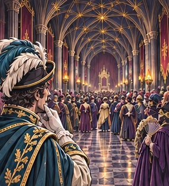
??? ?? ? ??? ??
Nun! dort hinten strömt es mächtig.
Die Bedeutung der Gestalten
Möcht' ich amtsgemäß entfalten.
Aber was nicht zu begreifen,글쎄! 저기 뒤쪽에는 비가 많이 내리고 있어요. 수치의 의미 나는 나의 공식적인 직무에 따라 전개하고 싶습니다. 하지만 이해하지 못하는 것
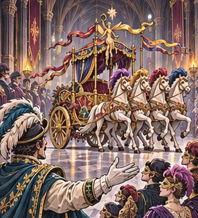
??? ?? ? ??? ??
Wüßt' ich auch nicht zu erklären;
Helfet alle mich belehren!--
Seht ihr's durch die Menge schweifen?
Vierbespannt ein prächtiger Wagen나도 그것을 어떻게 설명해야 할지 모르겠다. 모두들 도와주세요!-- 군중 속을 헤매는 모습이 보이나요? 웅장한 네 마리의 마차
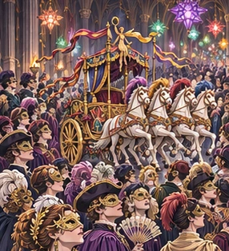
??? ?? ? ??? ??
Wird durch alles durchgetragen;
Doch er teilet nicht die Menge,
Nirgend seh' ich ein Gedränge.
Farbig glitzert's in der Ferne,모든 것을 수행했습니다. 그러나 그는 군중을 나누지 않습니다. 어디에서도 군중이 보이지 않습니다. 멀리서도 형형색색으로 반짝이고,
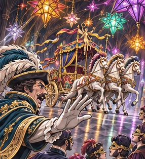
??? ?? ? ??? ??
Irrend leuchten bunte Sterne
Wie von magischer Laterne,
Schnaubt heran mit Sturmgewalt.
Platz gemacht! Mich schaudert's! +
형형색색의 별들이 불규칙하게 빛난다 마치 마법의 랜턴에서 나온 것처럼, 폭풍우와 함께 코를 골며 다가옵니다. 길을 냈습니다! 나는 떨린다! +